Movimiento Desencadenado
Una evolución del sistema que ya usa el canal, no un cambio de marca. Todo lo que hay aquí está medido sobre las piezas publicadas, o calculado. Estado a 10 de septiembre.
La decisión que hay que tomar
El sistema funciona entero en las dos y no cambia nada más: mismo acento, mismo logo, misma tipografía, mismo gesto. Lo que cambia es cuál abre y cuál acompaña. Aquí está cada una en la misma pieza, la miniatura de YouTube, que es donde más se juega.
episodio 63
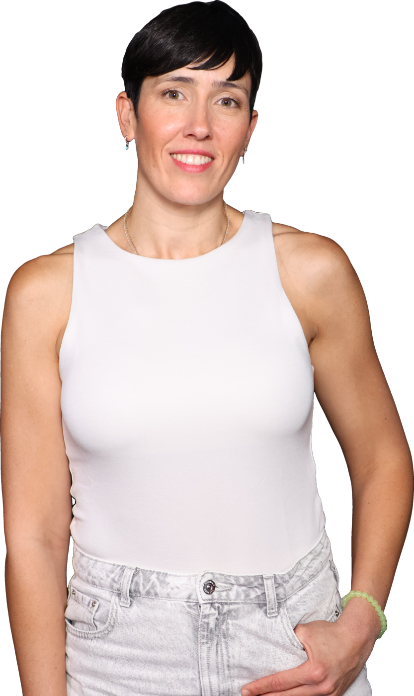
"Salí del dolor
crónico yo sola"
Clara. Con el invitado a color, la persona es lo único con color en la pieza. Es más de papel, más silenciosa, y en la parrilla oscura de YouTube destaca sola.
episodio 63
"Salí del dolor
crónico yo sola"
Oscura. Es la continuidad con los 60 y pico episodios ya publicados, el acento salta más y la pieza pesa más en pantalla. La piel del invitado compite con el fondo.
Elijas la que elijas, la otra no se tira: la que no mande es la superficie alterna y da el ritmo, tarjeta a tarjeta en el carrusel y sección a sección en la web.
Lo que cambia respecto a lo que hay hoy
El logo
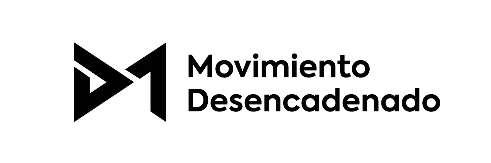
Negro sobre la superficie clara.
Blanco sobre la superficie oscura.
El dibujo no se toca. Lo único que cambia es que va en una tinta, siempre. Y no es una renuncia estética: el logo a color no llega a contraste sobre ninguna superficie, porque siempre falla una de sus dos mitades.
| Superficie | Mitad coral | Mitad púrpura | La peor |
|---|---|---|---|
| Blanco | 2,89 | 7,76 | 2,89 |
| Clara #E9E9E7 | 2,38 | 6,39 | 2,38 |
| Oscura (arriba) | 4,80 | 1,79 | 1,79 |
| Oscura (abajo) | 5,76 | 2,15 | 2,15 |
El mínimo para que una forma se lea es 3:1. En la práctica el logo ya iba en una tinta en todo lo que existe hoy (cabecera de YouTube, perfil de Instagram, entradilla de vídeo): esto solo lo escribe. Consecuencia: el púrpura deja de vivir dentro del logo y sale del sistema; el logo bicolor pasa a archivo histórico.
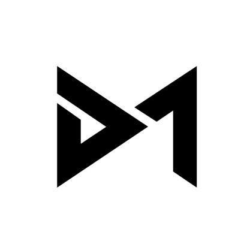
Donde no cabe el logotipo con palabras (avatar, favicon, marcas de 32 px) va solo el isotipo. A ese tamaño, "Movimiento Desencadenado" sería una mancha.
Superficies
Clara
Plana, sin degradado.
#E9E9E7
Oscura
Degradado vertical: el azul vive en el tercio de arriba y muere antes de la mitad. Es lo que la separa de un negro cualquiera.
#252D39 → #232426 → #1E1E1E
Alternan para dar ritmo: en carrusel slide a slide, en web sección a sección. Nunca dentro de la misma pieza.
Acento
Uno, no dos. El sistema anterior necesitaba un coral para el fondo oscuro y otro más profundo para el claro, porque el vivo sobre claro se quedaba en 2,38. Este pasa en las dos con un solo valor, y por eso puede ser el acento y no dos según el soporte. El púrpura queda fuera: 2,15 sobre la oscura.
| Pieza | Acento | Púrpura |
|---|---|---|
| Tarjeta de cita 2.0 (6 slides) | 0,95 % a 1,44 % | 0 |
| Miniatura de YouTube 2.0 | 0,4 % | 0 |
| Portada de episodio, sistema viejo | 3,8 % | 1,8 % |
| Miniatura de YouTube, sistema viejo | 9,8 % | 10,4 % |
La ración: el acento nunca pasa del 10 % del área pintada, y en la práctica se queda muy por debajo. Marca una palabra del claim, el rótulo, el filete y el rol. Lo que el sistema retira no es coral: es púrpura de superficie.
Tipografía · Axiforma
Caja mixta en titulares: las mayúsculas son lenguaje Polestar.
El filete · la línea que mide el avance
Ya estaba en dos sitios sin que nadie lo hubiera escrito: la barra de navegación del carrusel y el filete que sale del rótulo en las placas de vídeo. Es el mismo elemento haciendo lo mismo, decir por dónde vas. Al declararlo componente, entra en el resto del pack sin inventar nada.
Carrusel. 190 × 2 px arriba a la derecha, pista al 40 % y tramo activo en acento. Dice en qué tarjeta vas.
Placas de vídeo. El filete arranca donde acaba el rótulo y muere antes del margen. Medido en la placa del canal: 3 px de grosor, de x 624 a 1655 sobre 1920.
Rótulo de vídeo. El mismo filete, girado: barra vertical en acento a la izquierda del nombre.
Grosor: 2 px por cada 1080 px de ancho de la pieza, redondeado a entero, mínimo 2. Así pesa lo mismo en un carrusel que en una placa de 1920 o en una web. Y una regla que lo mantiene limpio: un solo filete por pieza, y siempre horizontal salvo en el rótulo de vídeo.
La tarjeta de cita · la pieza que define la marca
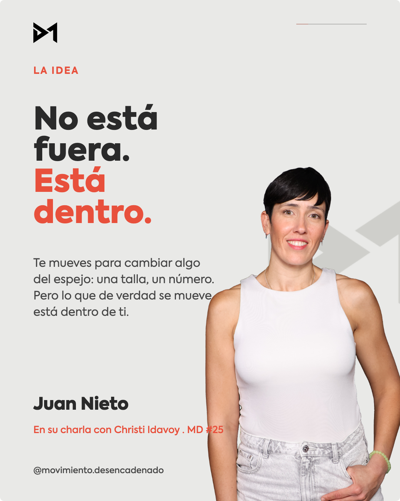
Clara.
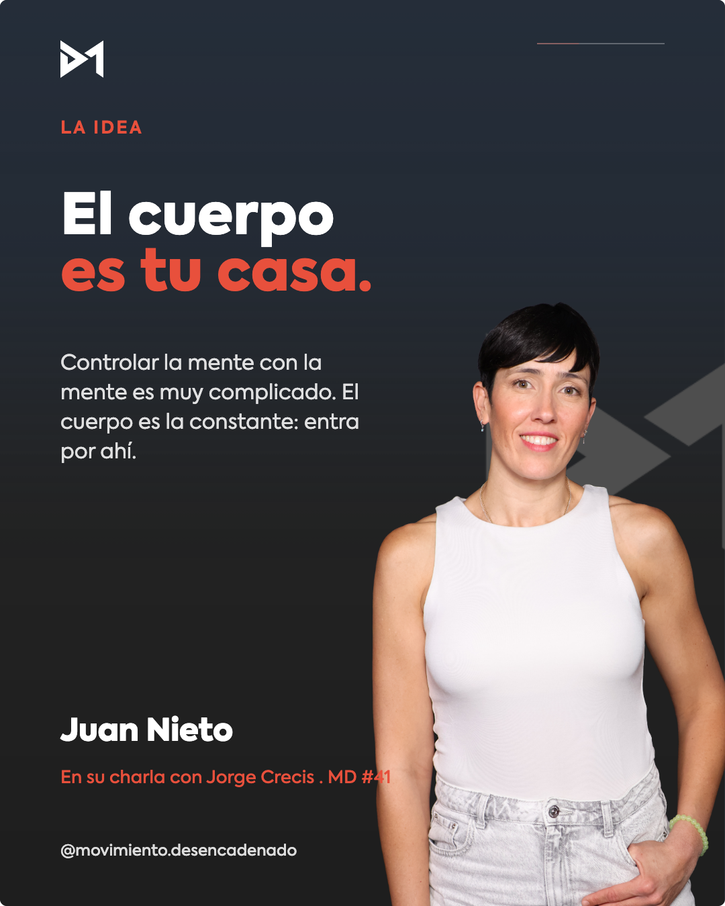
Oscura. Alternan para dar ritmo al deslizar.
Acento único, invitado a color, logo en una tinta, isotipo tono sobre tono detrás. La foto es un placeholder hasta tener los recortes reales de cada invitado. Claim en Axiforma Black a 84 px con el remate en acento, contexto en Book a 31 px, atribución abajo a la izquierda y filete de navegación arriba a la derecha. Márgenes de 90 px.
Vídeo · entradilla, cierre y careta
Las placas que usa el canal hoy ya tienen la estructura buena: rótulo, filete, titular en dos líneas, plataformas. Lo que sobra es el color. Debajo, la misma geometría medida y repintada con el sistema: fuera los glows morados y rosas, el filete en el acento y la flecha en el tercio derecho para no cruzar el texto.
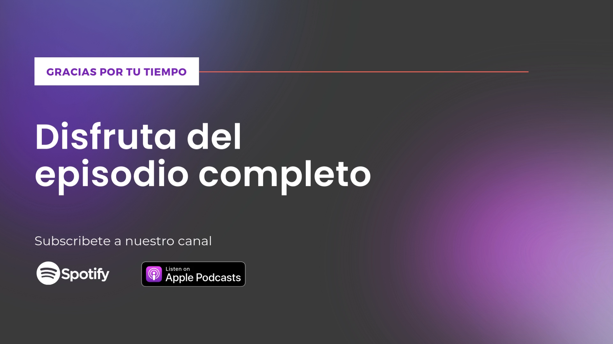
Hoy. Píldora blanca con texto púrpura y dos glows de color detrás.
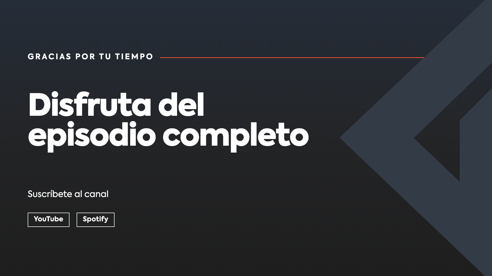
Repintada. Mismo sitio para todo: rótulo a 108 px del borde, filete a la altura del rótulo, titular a 119 px y las plataformas abajo.
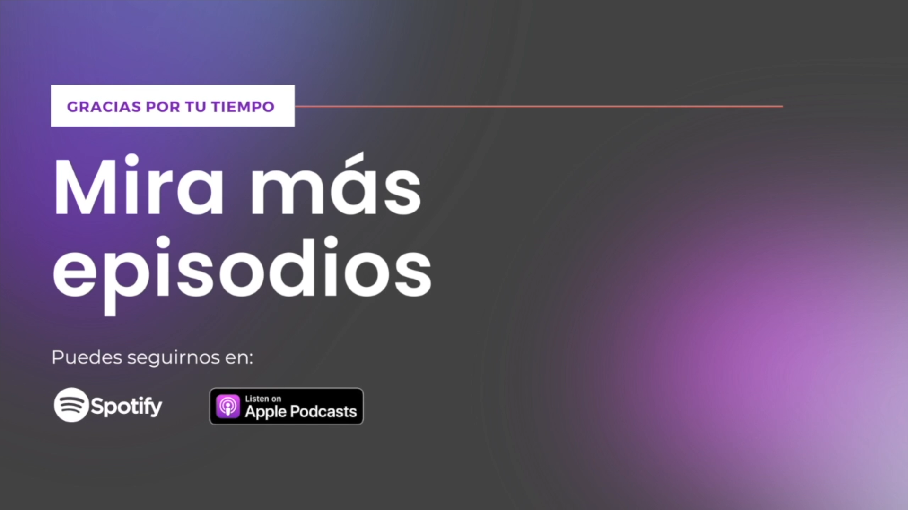
Cierre, hoy.
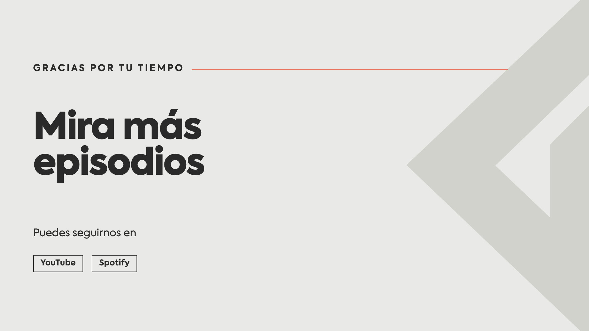
Cierre repintado, aquí en la superficie clara para ver las dos.
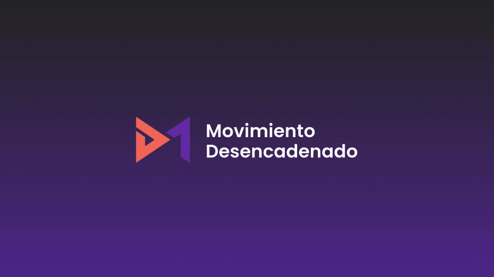
Careta, hoy. Degradado morado y logo a color.
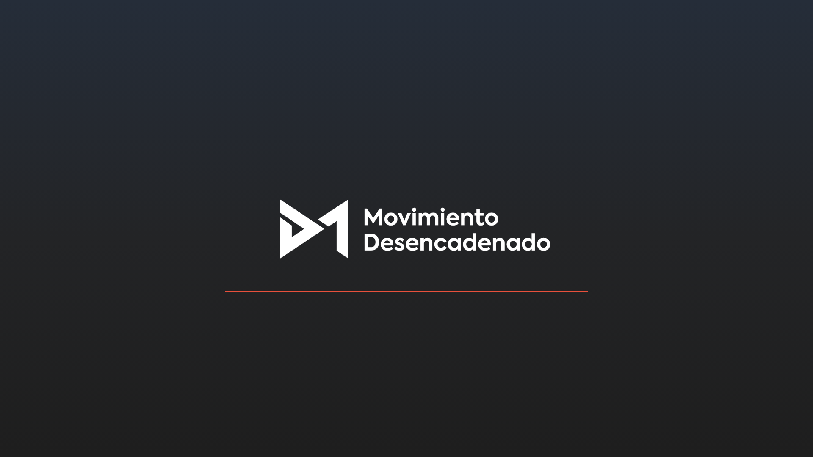
Careta repintada. El logo en su sitio medido (856 px de ancho, centrado) y debajo el filete: en movimiento crece de izquierda a derecha, que es el gesto de la marca.
Los botones de plataforma son el botón secundario del sistema: filete, radio 0, la tinta de la superficie. Sustituyen a los badges de tienda, que traían su propio color y rompían la paleta.
Cabeceras y perfil
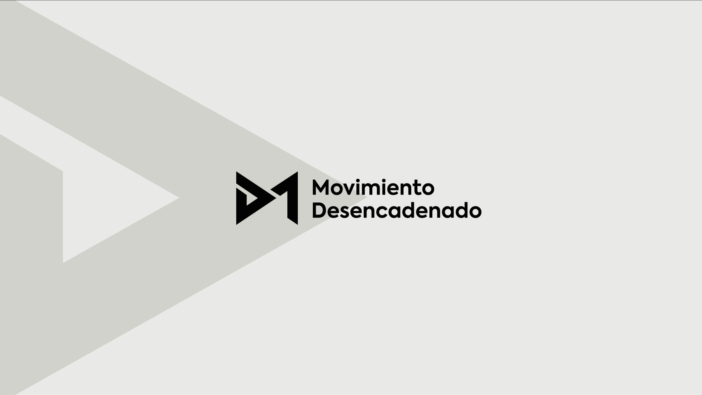
YouTube · 2560 × 1440. El logotipo va a 1200 × 400, centrado dentro de la franja segura de 1546 × 423, que es lo único que se ve en móvil y escritorio. Por encima de ese tamaño se corta en móvil.
Instagram · perfil. Solo el isotipo, al 89 % del diámetro, sobre fondo limpio sin flecha.
CTAs
Un solo primario por pantalla. Sin esquinas redondeadas: el isotipo es todo aristas. El botón de acento lleva tinta oscura; con blanco encima no llega a contraste (2,89).
Lo que se jubila
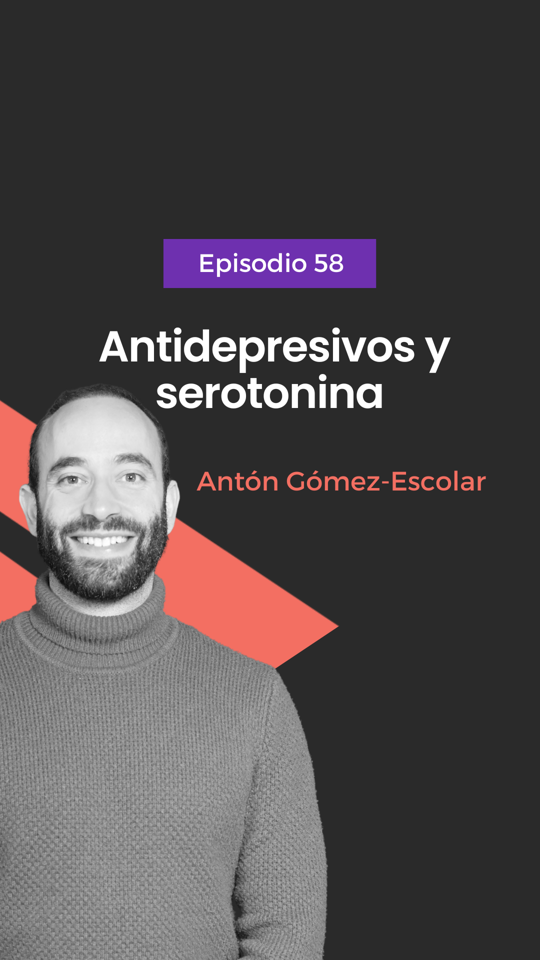
La portada de episodio de hoy reúne casi todo lo que sale: píldora púrpura, invitado en blanco y negro, banda diagonal y dos acentos compitiendo.
El mapa · qué está resuelto y qué falta
| Pieza | Estado | Nota |
|---|---|---|
| Logo y sus versiones | Resuelto | Una tinta, con área de uso por tamaño |
| Superficies, acento y tipografía | Resuelto | Falta elegir cuál manda |
| El filete y la flecha | Resuelto | Los dos únicos gestos del sistema |
| Tarjeta de cita (carrusel) | Resuelto | Con foto placeholder |
| Miniatura de YouTube | Resuelto | Clonada del episodio 63 |
| Cabeceras y perfiles | Resuelto | YouTube e Instagram exportados |
| Placas de vídeo (careta, entradilla, cierre) | Propuesto | Geometría clonada; falta animarlas |
| Portada de episodio (feed 9:16 y 4:5) | Falta | Es la pieza más publicada después de la miniatura |
| Rótulo de nombre en vídeo | Falta | El componente existe, falta la plantilla a 1920 |
| Web | Falta | El prototipo va con los tokens de julio |
| Presentación y documento de marca | Falta | Esta página es el borrador |
Nada de lo que falta cambia el sistema: son plantillas nuevas hechas con las mismas piezas.